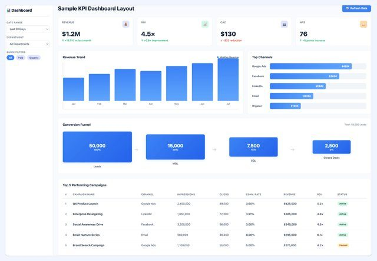
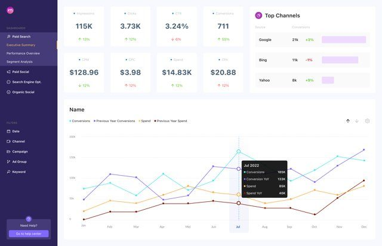

Short answer: You build a digital marketing portfolio with no experience from three strong practice projects, small real projects, and clear case studies — not from paid client work. A portfolio has to show how you think, what you can do, and what you learned. This guide shows how to build one from scratch even with no job yet.
No job yet? No problem. Build a digital marketing portfolio from scratch with three strong practice projects, small real projects, and clear case studies.
Many beginners feel stuck in a circle: employers ask for a portfolio, but you need experience to build one. The good news is that a portfolio does not have to contain paid client work. It has to show how you think, what you can do, and what results or learning came from your work. Practice projects, volunteer work, and course assignments can all do that, if you present them clearly.
This guide shows you how to build one from scratch, using projects you can start this week, without a large budget or a client.
Quality matters more than quantity. Three well-explained projects will impress a reader far more than ten unfinished screenshots. Aim for projects that cover different skills, so a reader can see your range. A good beginner set could include one social media project, one search or content project, and one analytics or advertising project.
For example, create a one-month social media plan for a fictional bakery, optimise a blog post for a chosen keyword, and build a simple advertising plan with sample ad copy. Each project should be complete enough to discuss: what you did, why, and what you learned. If you have completed courses on Google Skillshop, HubSpot Academy, or Coursera, use that learning as the basis, rather than copying course slides.

If you have no client, invent a realistic practice brand and label it clearly as a practice project. Honesty matters. Do not pretend a fictional project was paid work. Choose a simple business, such as a fitness studio, a small online shop, or a local cafe, and write down its audience, its main goal, and its biggest problem. That brief gives your work focus.
Then build around that brief: audience profiles, a week of social posts, two or three emails, homepage improvements, and how you would measure success. A focused plan that solves one clear problem looks more professional than one that tries to do everything. Save your work as images, documents, or slides that are easy to share.
Once you have practice projects, look for small real projects. Offer to help a friend, a family business, a student society, or a local charity with one clear task, such as improving their social media captions for two weeks, writing a short blog post, or checking their website for basic search optimisation issues. Agree on the task in advance, keep it small, and ask for permission to include the work in your portfolio, with any sensitive numbers removed.
Real projects are valuable even when the results are modest. A small improvement that you can explain honestly is stronger than a grand claim with no evidence. If you run a small personal page or blog and try what you learn there, that also counts. Track what you did, what changed, and what you would do differently next time. That reflection shows maturity, and it gives you something real to talk about in an interview.

A portfolio is not just a collection of screenshots. For each project, write a short case study with four parts: the goal, what you did, the result or learning, and what you would improve. Keep it short, use clear headings, and show your work with examples. For instance, instead of writing "I did social media marketing", write "I planned twelve posts for a fictional cafe, focused on morning offers, and created captions and hashtags for each post."
Include the tools you used, such as Canva for designs, Google Analytics for basic traffic checks, or Meta Business Suite for scheduling, but only if you actually used them. Add a short introduction about yourself, the skills you are building, and the kind of work you want to do next. Keep contact details simple and professional.
You do not need an expensive website. A well-organised Google Drive folder, a Notion page, or a free website builder page can work, as long as the link opens easily and the layout is clean. Check every link and image, and test it on a phone, where many readers will open it first.
Update your portfolio as you learn. Replace your weakest project when you complete a better one, add new skills as you practise them, and remove anything outdated. Then share it when you apply for internships, freelance work, or entry-level roles, and be ready to talk through one project in detail. A portfolio built this way will not pretend you have experience. It will do something better: it will prove you can think, create, and learn, which is exactly what a beginner employer or client needs to see.
No. Practice projects, volunteer work, and course-based projects count, as long as you label practice work honestly and explain your thinking clearly.
Three strong, well-explained projects are a good start. Quality matters far more than having ten unfinished samples.
A well-organised Google Drive folder, a Notion page, or a free website builder page all work, as long as the link opens easily, images are readable, and there are no broken links.